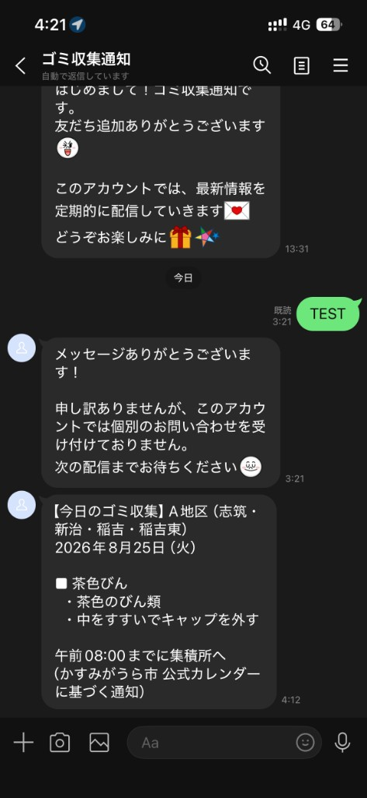

毎朝7時、収集がある日だけ LINE で通知。実際に届いた画面を使った使い方・完成報告です。

ゴミ収集通知（@611ntmct）· 2026/8/27 4:12 受信
収集がない日は通知されません。GitHub Actions が毎朝7:00（JST）に自動判定します。
LINE の「ゴミ収集通知」を開く。メッセージが来ていれば、その日の収集品目を確認。
メッセージの出し方に従い、午前8時までに集積所へ。燃やすごみは市指定袋。
その日は収集なし。LINE に届かないのが正常な動作です。